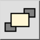

Esta es una traducción automática.
Barra de herramienta / icono:

Menú: Modificar > Orden > Traer al frente
Acceso directo: M, F
Comandos: tofront | mf
Cambia el orden en el que se muestran las entidades. Utilice esta herramienta para traer entidades al primer plano si están ocultas detrás de imágenes, rellenos sólidos u otras entidades.